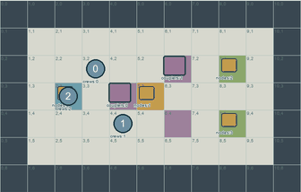
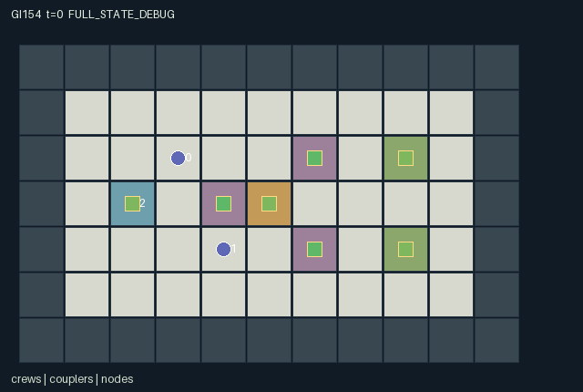

GI154 / SPATIAL
孤岛火种
修理、切换与启动角色围绕抽象的供能网络配合；这是格点令牌游戏，不是电气仿真。
Original saved demonstration
Recorded native state, often authored scripts or interventions; information scope and failures are preserved in the original provenance. This is a saved demonstration, not live browser play.

Release verification episode
Untrained uniform legal actions. Actual JAX state sampled along the full original episode; full-state debug camera. No human performance or learning claim.

Run this game
crucibles play --game 154
Start Python locally, then open the address printed by the terminal. Installation, multiplayer, takeover and keyboard controls →
Objective, rewards & ending
Exact task contract
{
"objective": "Restore and operate a small fictional grid to service three units at each of two sinks, balancing portable charge, spatial repair access and shared line capacity.",
"natural_termination": "All three units at both sinks terminate successfully. Exhausting the 120-tick started-source fuel budget before completion terminates a game failure. Otherwise the horizon is 160.",
"interaction": "Repair and switch capabilities complement one another. Live couplers prohibit repair-crew entry, node energization enables remote recharging, and simultaneous demands can trip a shared trunk and deny all downstream requests.",
"observation_access": "Terrain, source fuel, completed demand, node-power indicators and live/trip signals are public. Positions, charge and repair details use Manhattan-radius-3 entity visibility without wall occlusion. Hidden values are -1 with an explicit visibility bit."
}Declared per-step reward bounds: -2 to 2. Observability: partially_observable.
Rules
- This is a fictional token-and-grid game, not an electrical engineering model.
- Role 0 repairs, role 1 switches and role 2 black-starts or delivers portable energy.
- A link needs health two, a closed switch and zero cooldown; downstream power depends on the trunk.
- The repair crew cannot enter live coupler cells; repairing requires a de-energized, cool adjacent coupler.
- Source-fed tool charging and sink service are simultaneous requests. Trunk capacity is two; each branch capacity is one.
- An overload opens and damages its line and sets a three-tick cooldown before repair. Downstream requests lose power before fulfillment.
- Portable service bypasses the grid at two charge per sink unit. One-charge gifts require adjacency.
- Starting the source consumes two portable charge and then one fuel per live step. Both sinks completed or fuel exhausted end naturally.
Original mechanism document (historical status wording retained)
# Island Spark **AUTHOR_ONLY_NOT_EXECUTED.** Initial parentless train proposal 154, window 0, source attempt 0. No candidate import, JAX evaluation, reset/step call, numerical R0, trajectory replay, rendered animation or learning run occurred during authoring. AST/syntax and declarative data-schema checks do not establish runtime correctness or game outcomes. Native boundary: A=3, O=150, U=14, H=160. Observations are float32 `[A,O]`, actions int32 `[A]`, masks bool `[A,U]`, rewards float32 `[A]`, and every state leaf is fixed-shape int32 or bool. Source SHA-256: `89509f88d98359279efbc7b4edb01503a0239f859542be02fb65161fd105e187`. ## Game and cross-agent mechanisms Restore and operate a small fictional grid to service three units at each of two sinks, balancing portable charge, spatial repair access and shared line capacity. The three crew roles change one another's feasible actions. Repair increments a coupler's health while the switching crew must physically approach and close it. Repair checks start-of-tick de-energization and cooldown, so opening an energized line does not retroactively authorize a repair in that same step. The energy crew supplies the initial two-charge start pulse. Once powered, a source or downstream node can recharge a nearby crew, but drawing from the junction or a sink consumes shared line capacity. The trunk feeds both branches. Each service or recharge request contributes one load unit along its path. All demands are counted before any is fulfilled. A trunk demand above two or a branch demand above one opens the overloaded link, removes one repair stage and starts a three-tick cooldown. Power is recomputed before service, so impatient simultaneous recharge can prevent a teammate's recharge or delivery and require another repair/switch cycle. This is a literal game transition, not a power-flow simulator. A network-first strategy invests tool charge in staged restoration; a portable-delivery strategy spends the energy crew's pack directly at sinks; hybrid schedules alternate servicing and recharge to avoid overload. The switching crew can open a link to restore the repair crew's access, while a donor can transfer scarce tool charge to an adjacent specialist. These partner-dependent possibilities are unexecuted hypotheses. The initial repair crew has insufficient charge to repair every damaged link without replenishment or sharing. Crew charge is in 0..6; gifts transfer one unit without creation. Repair, toggling, black-start and direct service have explicit costs, and charging is an explicit source of portable units rather than a claimed closed physical-energy system. Coupler health is 0..2, cooldown 0..3, and each sink remains capped at three delivered units. Fuel decreases only after starting; success on its final usable step takes priority over exhaustion. The reset is deterministic and ignores its key. Possible later rule variants could alter graph topology, link capacities, station layout or capability allocation. None is implemented or evaluated here. ## Actions, contention and temporal order - `0`: Wait. - `1`: Move north. - `2`: Move east. - `3`: Move south. - `4`: Move west. - `5`: Repair nearest eligible adjacent coupler; repair crew only. - `6`: Toggle nearest adjacent coupler; switching crew only. - `7`: Black-start source from adjacent cell, spending two charge; energy crew only. - `8`: Service one unmet sink unit while standing at the sink. - `9`: Request one tool-charge unit from nearest node within one cell. - `10`: Deliver one sink unit with two portable charge; energy crew only. - `11`: Give one charge to adjacent agent 0. - `12`: Give one charge to adjacent agent 1. - `13`: Give one charge to adjacent agent 2. Out-of-range or masked actions deterministically become action 0. A legal attempt can be unfulfilled when its resolution-phase spatial, resource or joint-action prerequisites are absent. Ordinary movement rejects another agent's start-of-tick cell, so swaps are blocked. Empty-cell contention uses the smallest `(agent_id - t) mod A`. Rigid towing/hauling has its own explicit whole-body translation phase; its participating body can use its own vacated cells, and free agents remain blocked by the old and new body. All priorities and rule-specific ordering are literal in the source evidence below. ## Native observations and truthful rendering Terrain, source fuel, completed demand, node-power indicators and live/trip signals are public. Positions, charge and repair details use Manhattan-radius-3 entity visibility without wall occlusion. Hidden values are -1 with an explicit visibility bit. - Columns `0:7` (self): Own id,x,y,portable charge,clock,source-started flag,personal serviced count. - Columns `7:24` (public): Fuel[1],node delivered counts[4],node power[4],live-line flags[3],trip flags[3],black-start flag,joint done. - Columns `24:39` (local): Three agent records: x,y,charge,personal count,visible. Manhattan radius 3; hidden values -1. - Columns `39:57` (local): Three coupler records: x,y,health,closed,cooldown,visible. Radius 3; current live flags are separately public. - Columns `57:73` (public): Four node records: x,y,powered,delivered. - Columns `73:150` (public): Static 7 by 11 public map flattened yx, using world tile legend. Positions are actual integer `[x,y]` coordinates with downward y; maps are indexed `[y,x]`. `scene.json` binds exact state paths for map, entities, visibility, attributes and events. Public event information is included in the flat observations. A per-step event is not relabeled as a cumulative counter or persistent level. Hidden entity fields are masked, and a full-state debug view must be labeled separately from role-visible replay. Scene descriptors contain no fabricated trajectory or executable rendering content. A real animation still requires an actual trusted replay. ## Termination, numerical bounds and intended invariants All three units at both sinks terminate successfully. Exhausting the 120-tick started-source fuel budget before completion terminates a game failure. Otherwise the horizon is 160. Nonterminal calls advance the int32 clock exactly once. Natural completion or failure has priority over the horizon. An already terminal raw call preserves every state leaf, observation and clock, returns zero rewards and all dones true, and retains the original terminated/truncated causes. No raw auto-reset occurs. Observation bounds are -1..160 and reward bounds -2..2. These are data/game bounds, not scientific effectiveness gates. Source-specific conservation, geometry and resource properties above are declared invariants for independent execution checks, not numerically verified claims. The manifest lists every leaf and safe structural invariants. Signed integer categories and coordinates are explicitly int32; the external uint32 reset key is not duplicated as hidden mutable state. ## Literal source evidence - Connectivity and role-visible state: `candidate.py:12` — `def refresh(self, s):` - Finite source, couplers and crews: `candidate.py:23` — `def reset(self, key):` - Live-cell access and role masks: `candidate.py:39` — `def legal_actions(self, s):` - Conserved charge gifts: `candidate.py:74` — `# Portable tool charge is conserved by donations; proximity is checked after movement.` - Repair before switching: `candidate.py:81` — `eligible = (distance <= 1) & (s["health"] < 2) & ~state["line_live"] & (state["cool"] == 0)` - Joint demand admission: `candidate.py:97` — `# All demands are admitted together; shared line limits are tested before fulfillment.` - Overload opens and damages lines: `candidate.py:105` — `trip = s["line_live"] & (load > jnp.array([2,1,1],jnp.int32))` - Portable bypass: `candidate.py:122` — `# The battery crew may bypass the grid at twice the portable-charge cost.` - Natural completion and fuel failure: `candidate.py:131` — `complete = jnp.all(s["delivered"][2:4] == 3)` - Observation slices: `candidate.py:143` — `def observe(self, s):` ## Unexecuted playthroughs and interventions `playthrough.json` supplies finite literal joint-action scripts and paired branches differing in exactly one role action at one decision. Every script and pair is `UNEXECUTED_AUTHOR_HYPOTHESIS`. Vector dimensions, integer action ranges and single-action differences were checked as data. Runtime legality, actual state changes, solvability, strategy quality and terminal success remain unverified. A future executor must retain failures or inconclusive traces rather than converting an intention into a success receipt. ## Reference use, interface handoff and provenance Only the supplied official snapshots were consulted. JaxMARL supplies the agent-keyed parallel API convention and `__all__`; the restricted kernel keeps a homogeneous array boundary for later trusted integration. Pgx supplies explicit legality/terminal/key API ideas, not any board-game rules. Craftax supplies a reference for spatial inventories and persistent game state. PureJaxRL is an algorithm implementation reference, not a new environment library; the supplied Craftax recurrent PPO baseline itself credits PureJaxRL. None of their environment, model, training or wrapper code was copied, imported or run. Frozen sources: [JaxMARL README](https://github.com/bold-lab-ai/JaxMARL/blob/main/README.md), [Pgx README](https://github.com/sotetsuk/pgx/blob/main/README.md), [Craftax README](https://github.com/MichaelTMatthews/Craftax/blob/main/README.md), [PureJaxRL README](https://github.com/luchris429/purejaxrl/blob/main/README.md), [Craftax recurrent PPO baseline](https://github.com/MichaelTMatthews/Craftax_Baselines/blob/main/ppo_rnn.py). Their exact snapshot hashes are recorded in `author_input_freeze.json`. A later trusted adapter may expose the fixed ids `agent_0` through `agent_2` as JaxMARL dictionaries, with `__all__` taken from `done_all` and unchanged observation/mask semantics. This author packet adds no learner or public adapter and does not modify the frozen experimental algorithm. Inactive-role no-op semantics, where relevant, are defined by the kernel rather than by renderer behavior. `author_input_freeze.json` binds all twenty frozen inputs and the separately authorized administrative erratum. The erratum resolves a copied reservation description and expressly permits reading this batch authorization; it changes no design, rule or outcome. No earlier candidate files, GI/learned/CURRENT results, training/evaluation feedback or final-test material were read for this batch. Only the four assigned new output directories were written. Window accounting remains parentless ordinals 154..157, 158 used/reserved of the existing 512 cap, and unchanged later windows. This packet establishes authored assets only; runtime quality, replay, animation, learnability, transfer and scientific acceptance remain unestablished.
Commands
Roles & abilities
agent_0 Repair crew: repairs de-energized couplers
agent_1 Switching crew: opens and closes repaired network links
agent_2 Portable-energy crew: black-starts the source, bypasses the grid or shares charge
Observation permissions
Training receives only the original observation rows. Role cameras use declared visibility; debug cameras are explicitly marked. Local benchmark records log debug exposure and role takeover history.
Exact observation layout
[
{
"slice": [
0,
7
],
"visibility": "self",
"meaning": "Own id,x,y,portable charge,clock,source-started flag,personal serviced count."
},
{
"slice": [
7,
24
],
"visibility": "public",
"meaning": "Fuel[1],node delivered counts[4],node power[4],live-line flags[3],trip flags[3],black-start flag,joint done."
},
{
"slice": [
24,
39
],
"visibility": "local",
"meaning": "Three agent records: x,y,charge,personal count,visible. Manhattan radius 3; hidden values -1."
},
{
"slice": [
39,
57
],
"visibility": "local",
"meaning": "Three coupler records: x,y,health,closed,cooldown,visible. Radius 3; current live flags are separately public."
},
{
"slice": [
57,
73
],
"visibility": "public",
"meaning": "Four node records: x,y,powered,delivered."
},
{
"slice": [
73,
150
],
"visibility": "public",
"meaning": "Static 7 by 11 public map flattened yx, using world tile legend."
}
]Entity visibility & attributes
[
{
"id": "crews",
"kind": "agent",
"count": 3,
"position": [
"agent_pos"
],
"active": [
"agent_active"
],
"visibility": [
"agent_visible"
],
"attributes": [
{
"state_path": [
"charge"
],
"meaning": "Portable tool charge, capacity six",
"display": "bar"
},
{
"state_path": [
"personal"
],
"meaning": "Sink units serviced by this crew",
"display": "number"
}
]
},
{
"id": "couplers",
"kind": "gate",
"count": 3,
"position": [
"line_pos"
],
"active": [
"line_active"
],
"visibility": [
"line_visible"
],
"attributes": [
{
"state_path": [
"health"
],
"meaning": "Repair stages completed, zero to two",
"display": "bar"
},
{
"state_path": [
"closed"
],
"meaning": "Switch closed; conductivity also needs health and cooldown",
"display": "flag"
},
{
"state_path": [
"cool"
],
"meaning": "Remaining trip cooldown",
"display": "number"
},
{
"state_path": [
"line_live"
],
"meaning": "Coupler is currently energized",
"display": "flag"
}
]
},
{
"id": "nodes",
"kind": "landmark",
"count": 4,
"position": [
"node_pos"
],
"active": [
"node_active"
],
"visibility": [
"node_visible"
],
"attributes": [
{
"state_path": [
"powered"
],
"meaning": "Node currently receives power",
"display": "flag"
},
{
"state_path": [
"delivered"
],
"meaning": "Completed demand units; only sinks 2 and 3 need three",
"display": "number"
}
]
}
]Actual verification & provenance
Per-game execution receipt
{
"game": "gi154",
"status": "PASS",
"verification_revision": 2,
"source_sha256": "89509f88d98359279efbc7b4edb01503a0239f859542be02fb65161fd105e187",
"seed": 20261101,
"runtime": {
"jax": "0.4.38",
"numpy": "1.26.4",
"devices": [
"TFRT_CPU_0"
]
},
"dimensions": {
"num_agents": 3,
"observation_size": 150,
"num_actions": 14,
"max_steps": 160
},
"checks": {
"eager_reset": {
"status": "PASS",
"seconds": 1.3401458263397217
},
"observation_spaces_legal_masks": {
"status": "PASS",
"seconds": 1.1476409435272217
},
"eager_step": {
"status": "PASS",
"seconds": 2.6150319576263428
},
"jit_reset": {
"status": "PASS",
"seconds": 0.0984199047088623
},
"jit_step": {
"status": "PASS",
"seconds": 1.2829601764678955
},
"eager_jit_integer_parity_float_measurement": {
"status": "PASS",
"seconds": 0.001001596450805664
},
"jit_vmap_reset": {
"status": "PASS",
"seconds": 0.16416478157043457
},
"jit_vmap_step": {
"status": "PASS",
"seconds": 1.7498290538787842
},
"outer_autoreset_api": {
"status": "PASS",
"seconds": 1.591386079788208
},
"full_original_horizon_episode_and_render": {
"status": "PASS",
"seconds": 1.0151920318603516
}
},
"human_scores": null,
"browser_controls": "PENDING",
"failures": [],
"elapsed_seconds": 11.965906858444214,
"float_parity_max_abs": 0.0,
"numerical_parity": "EXACT",
"raw_terminal_absorbing": "PASS",
"terminal_outer_reset": "PASS",
"episode_steps": 121,
"scripted_random_returns": [
-1.0710000499384478,
-1.0710000499384478,
-1.0710000499384478
],
"terminal": true,
"demo_information": "FULL_STATE_DEBUG",
"demo_frames": 22,
"render_roles_checked": 3
}Chromium control verification
{
"game": "gi154",
"status": "PASS",
"human_scores": null,
"engineering": true,
"checks": [
"catalog_selected_and_real_native_reset",
"dom_queue_and_native_step",
"second_participant_ownership_and_native_joint_step",
"all_roles_individually_controllable_no_role_cap",
"explicit_debug_camera",
"release_to_pure_ai_without_reset"
],
"ui_sha256": "15b5861d23b3c42811865c954d5a988280bbfd21cf8e93754be2437a027158c5",
"seconds": 4.129116773605347
}Original identity and file hashes
{
"id": 154,
"key": "gi154",
"title": "孤岛火种",
"summary": "修理、切换与启动角色围绕抽象的供能网络配合；这是格点令牌游戏，不是电气仿真。",
"tags": [
"网络协作",
"专长互补"
],
"family": "spatial",
"dimensions": {
"num_agents": 3,
"observation_size": 150,
"num_actions": 14,
"max_steps": 160
},
"source_sha256": "89509f88d98359279efbc7b4edb01503a0239f859542be02fb65161fd105e187",
"manifest_sha256": "21e948750bb5ad427cf8ff0462842ff512d0fdae81c8e669c5c06fab6e77708f",
"files": [
{
"file": "candidate.py",
"sha256": "89509f88d98359279efbc7b4edb01503a0239f859542be02fb65161fd105e187",
"bytes": 10374,
"origin": "work/exp_2/game_incubator_v3/community_games222_225_visualization_root222_v1/native154_candidate/registry/v2/games/game-v3-00154/candidate.py"
},
{
"file": "manifest.json",
"sha256": "21e948750bb5ad427cf8ff0462842ff512d0fdae81c8e669c5c06fab6e77708f",
"bytes": 12004,
"origin": "work/exp_2/game_incubator_v3/community_games222_225_visualization_root222_v1/native154_candidate/registry/v2/games/game-v3-00154/manifest.json"
},
{
"file": "scene.json",
"sha256": "36dfab190c972e81f3c2b029ca6574100b5bd2aef00e942e8ca13e96b9afb53d",
"bytes": 6885,
"origin": "work/exp_2/game_incubator_v3/community_games222_225_visualization_root222_v1/native154_candidate/registry/v2/games/game-v3-00154/scene.json"
},
{
"file": "mechanism.md",
"sha256": "9b73aab7d44b8ee8c5f7e54a5fc3dea18c6e83949d6011bb801b9f2da2d7a644",
"bytes": 10914,
"origin": "work/exp_2/game_incubator_v3/sources/game-v3-00154/attempt_00/mechanism.md"
},
{
"file": "playthrough.json",
"sha256": "f9fed800ec4cb75531c1c5daf6edda710d308c8c9e6f9360c10bcb0632aeaf00",
"bytes": 3231,
"origin": "work/exp_2/game_incubator_v3/sources/game-v3-00154/attempt_00/playthrough.json"
}
],
"original_status": "NATIVE154_REFERENCE",
"original_saved_replay": true,
"release_validation": "PASS",
"human_scores": null,
"browser_validation": "PASS"
}